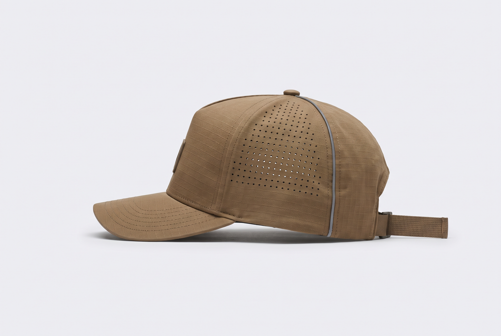
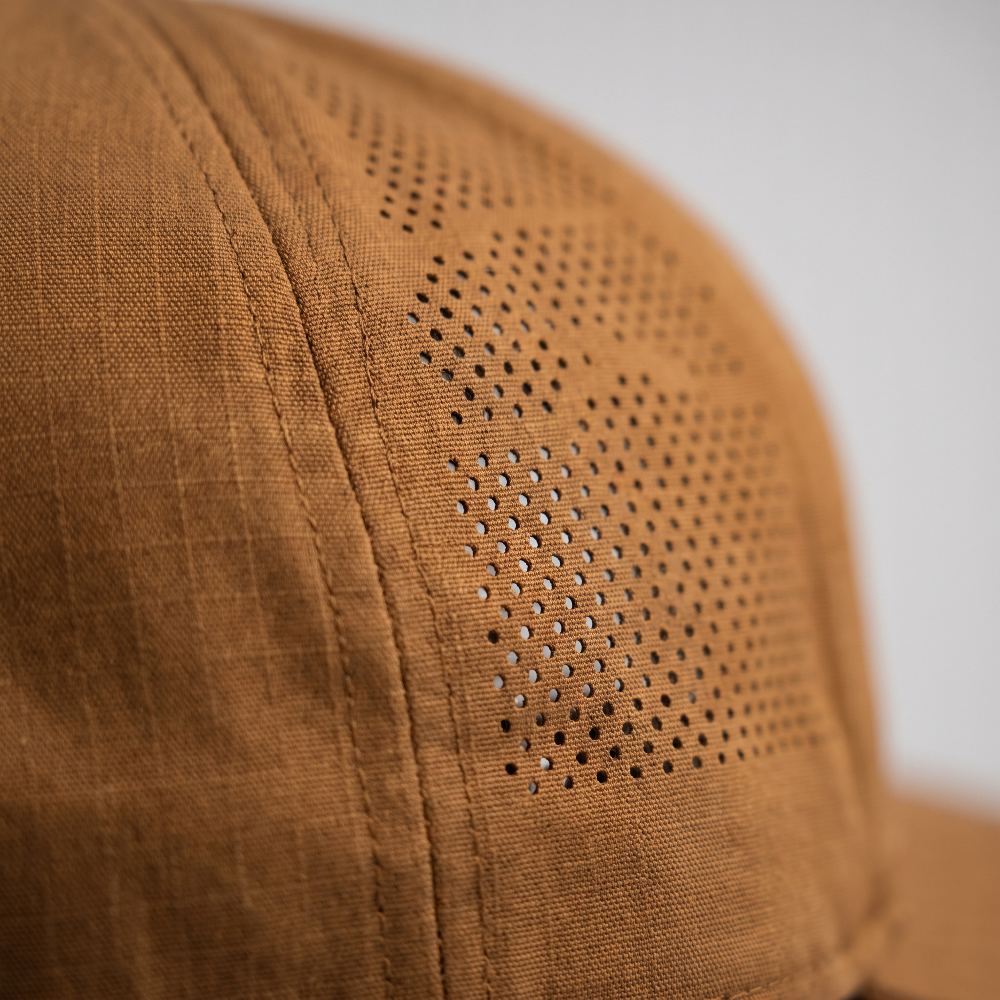
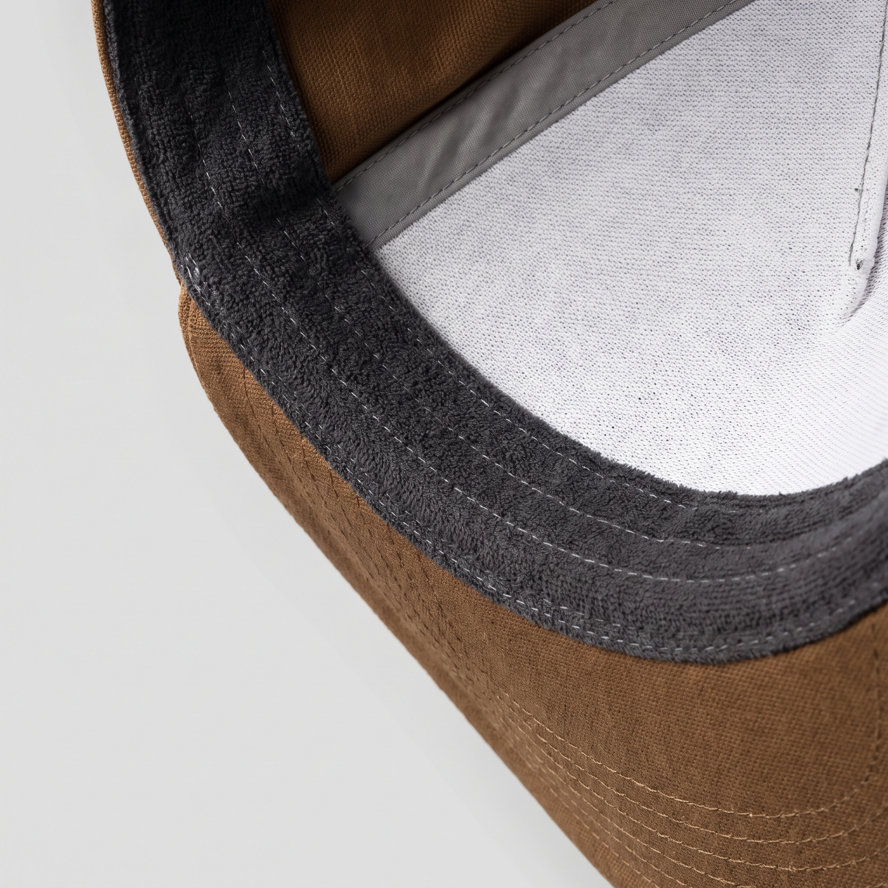
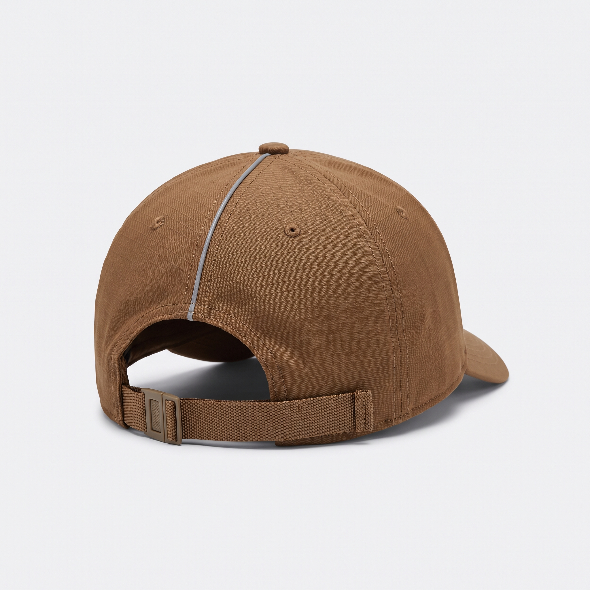
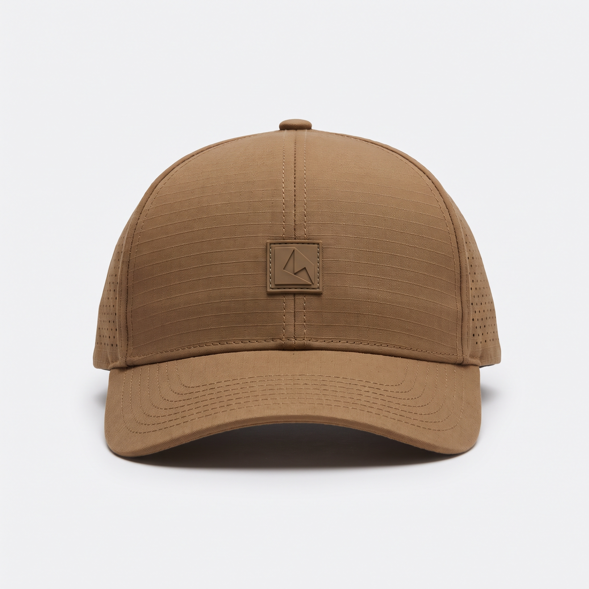
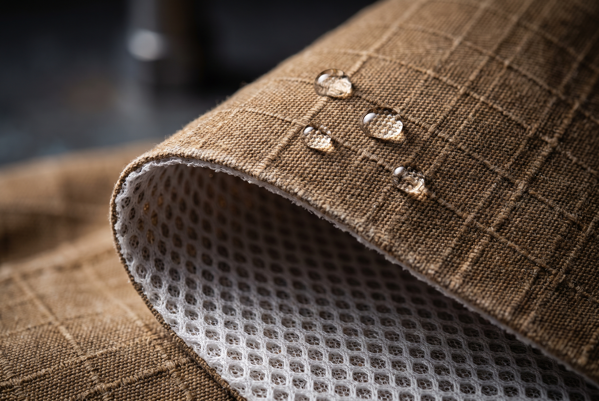
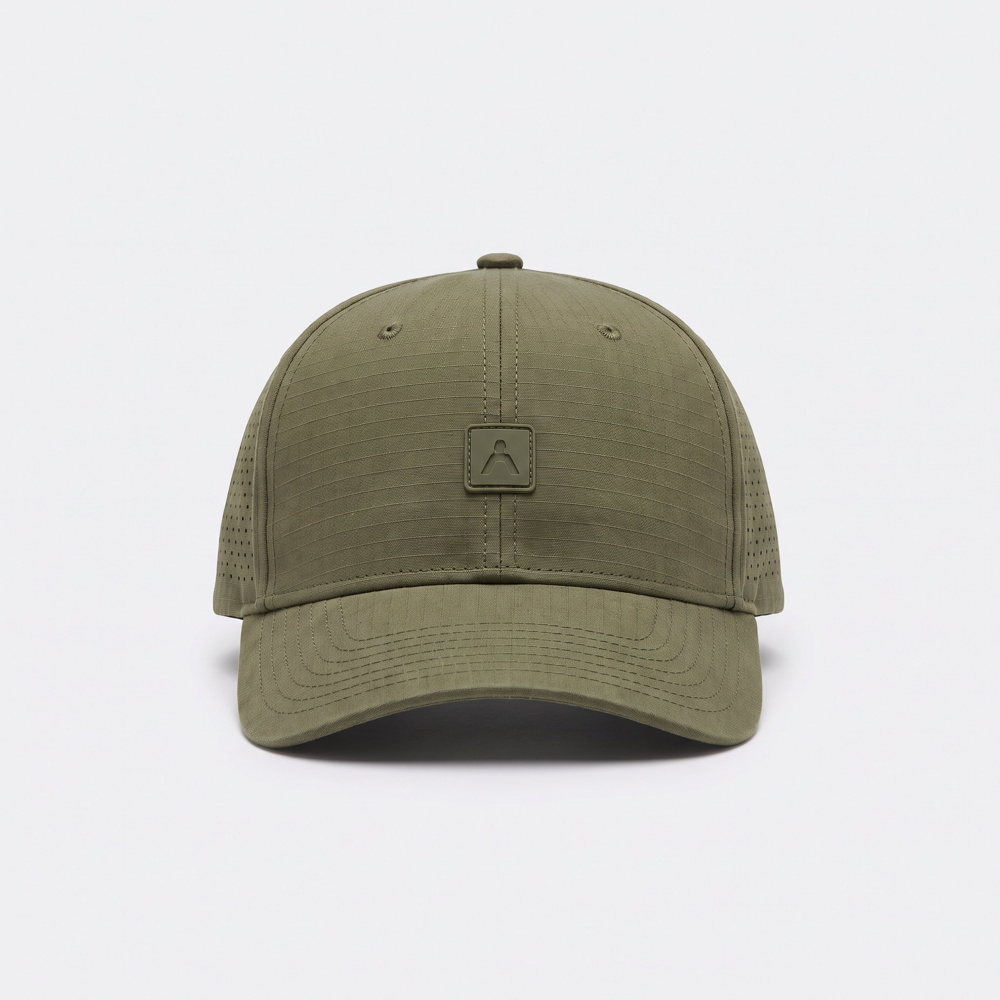
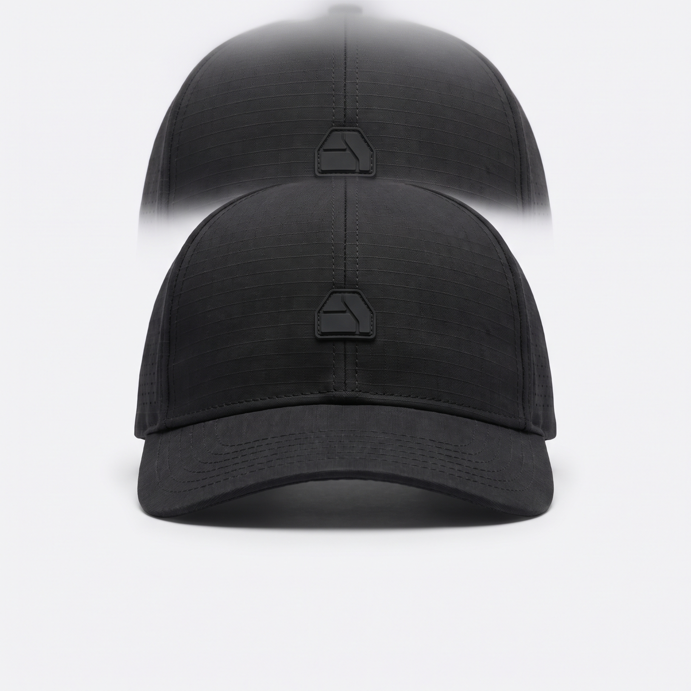
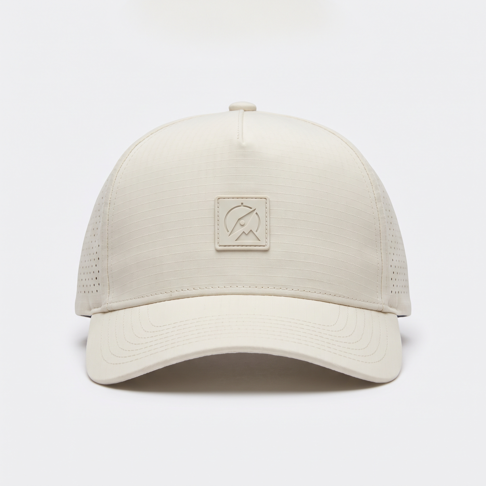
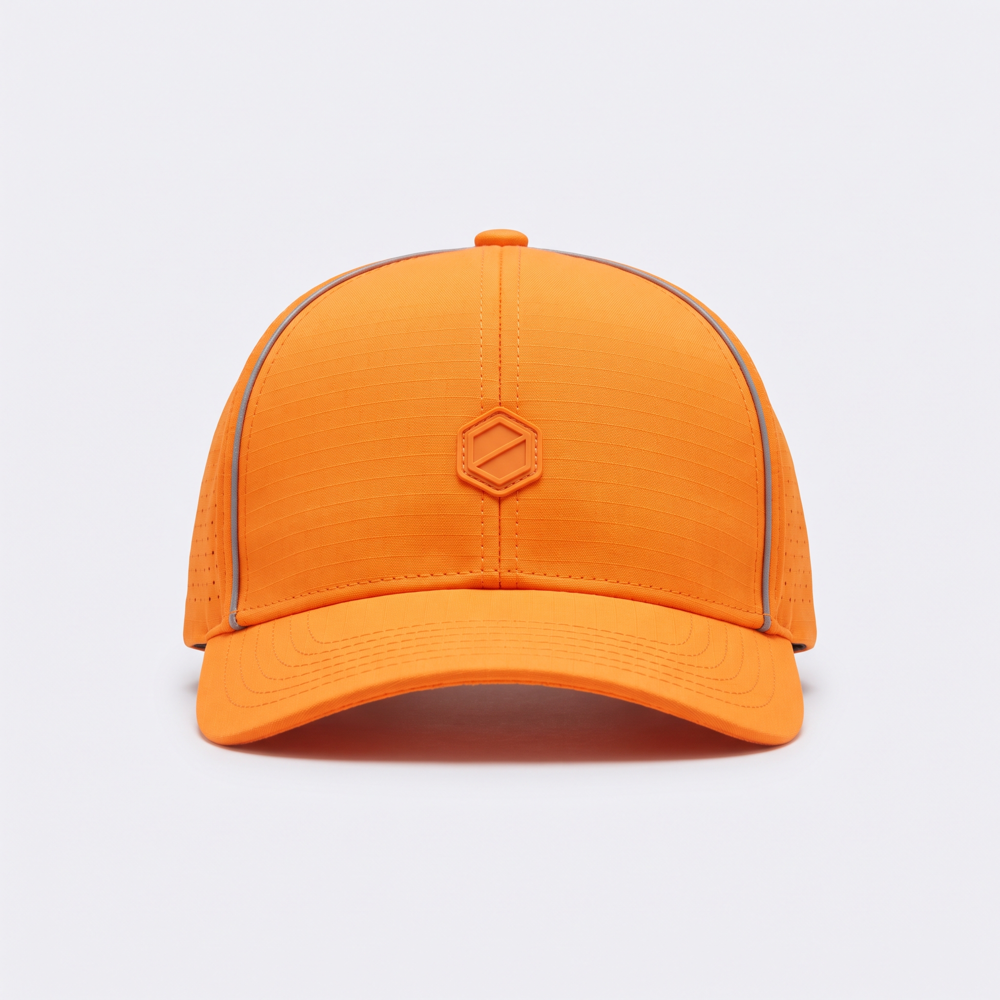

£42 · One size · Five colourways
Every part of a cap that usually fails first, removed and rebuilt. This is the whole thing, in detail.

A structured six-panel crown that stands up on its own, a properly curved peak, and a workwear canvas shell with a wicking mesh bonded to the back of it. Tonal everything — a moulded rubber badge instead of a logo, webbing instead of a snap. It works with the uniform and with the good jacket.
Construction

Hundreds of micro-perforations per side panel, cut rather than punched — so they never fray, stretch or telegraph through the fabric.

An antimicrobial-treated terry sweatband on flatlock seams. It pulls moisture sideways instead of letting it ring the brim — and it doesn't press a line into your forehead.

Flat woven webbing through a low-profile slider, with the tail held in a keeper so it isn't flapping about. Nothing to dig into your skull under a hard hat, nothing to snap off in the wash, nothing to rust. Reflective piping runs the rear seam.

A small moulded rubber mark, heat-welded rather than stitched, in the same shade as the panel it sits on. No embroidery to fray, no woven label curling at the corner, nothing announcing itself across a car park.
The fabric
The face is a washed cotton-nylon ripstop canvas — the cloth that gives workwear its weight and the way it ages. On its own it would soak like every other canvas cap ever made.
So there is a wicking polyester mesh bonded to the back of it. Sweat is pulled off your head, spread sideways across the mesh, and pushed out through the ripstop to evaporate — instead of sitting in the cloth waiting to stain.
A durable water-repellent finish keeps the face of the cloth from wetting out, and twenty minutes on a cool dry cycle brings it back when it slows. The colour stays the same wet or dry: no dark crescent above the peak, no salt line come Friday.





Five colourways
Yarn-dyed before the cloth is woven, not sprayed on after — so the colour runs all the way through and weathers evenly instead of blotching.
Hamilton Brown
Price includes VAT. Free UK delivery over £50.
Tech specs
Fabric weights, trim dimensions and finish performance are confirmed at production and may vary between batches. Where we can't yet evidence a claim, we don't make it.
Owning one
Machine wash cold on a normal cycle, hang dry. No tumble dryer — heat is what delaminates the mesh backer from the canvas, and that's the one failure we can't fix. Don't iron the peak, for obvious reasons. If the water repellency ever slows down, twenty minutes on a cool dry cycle will usually wake it back up.
Yes — that was the brief, and it's why the closure is flat woven webbing rather than a plastic snap or a metal buckle. The crown is structured but it isn't tall for the sake of it, and the sweatband is cut narrow enough to stay below the harness rather than fight it. It's the single most common thing site customers write to us about.
It fits 54–61 cm, which covers the large majority of adult heads and most teenagers from about 13. The webbing adjuster runs the full range and holds where you set it. If it doesn't fit, send it back and we'll refund the postage too.
Free UK delivery on orders over £50, otherwise £3.95 second class or £5.95 tracked next day. We post Monday to Friday from Wrexham. Returns are free within 60 days, unworn or worn — we're not precious about it.
If the cap looks tired inside 90 days of ordinary use — sweat staining, salt lines, the crown going out of shape, the colour patching — email us and we'll replace it. No receipt, no photographs, no argument. It's a guarantee about the fabric, not about losing it on a train.
From 25 units, yes — tonal or full-colour embroidery on the front panel, with pricing from £27 a cap. Details on the trade page.
Sweat through it, sit on it, leave it on the dashboard. If it looks tired inside 90 days we'll replace it.